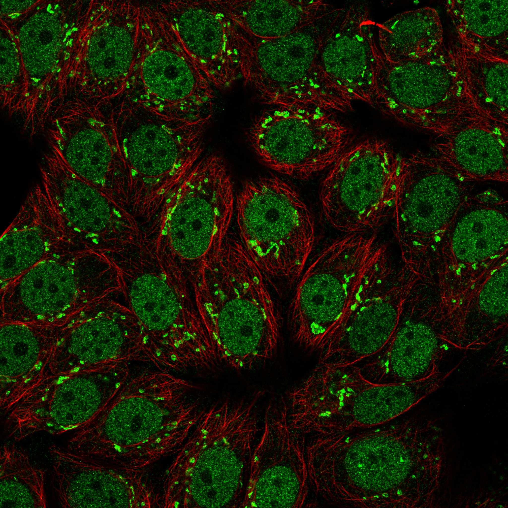
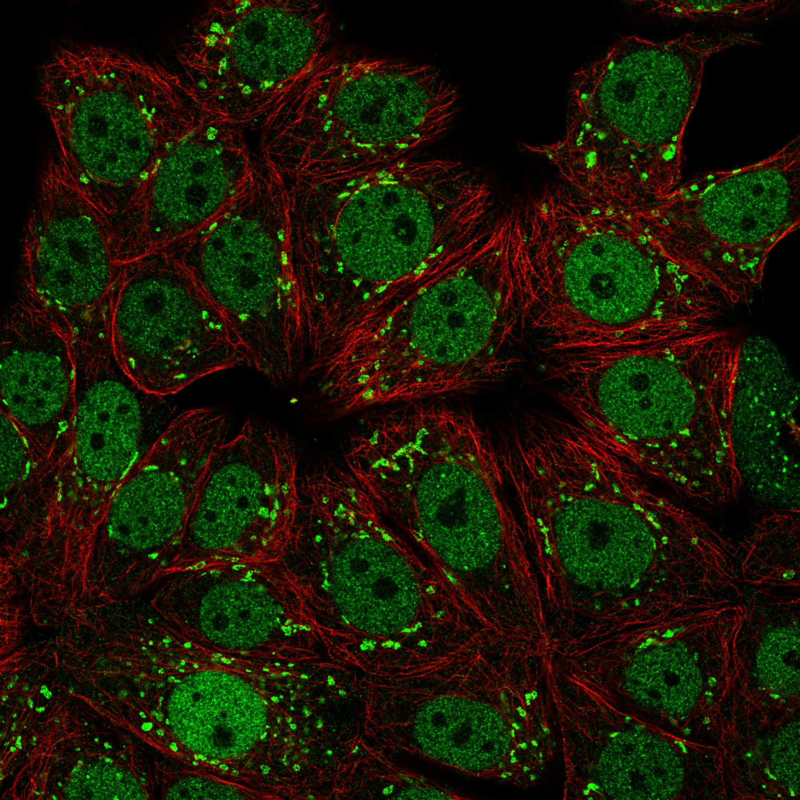

type: protein-evaluation gene: "CUX1" date: 2026-06-03 tags: [protein-scout, rejected, evaluation] status: rejected ---
CUX1 — REJECTED (研究热度过高 (PubMed strict=231，超过100篇阈值))
1. 基本信息
| 项目 | 内容 |
|---|---|
| 基因名 / 别名 | CUX1 / CUTL1 |
| 蛋白名称 | Homeobox protein cut-like 1 |
| 蛋白大小 | 1505 aa / 164.2 kDa |
| UniProt ID | P39880 |
| 评估日期 | 2026-06-03 |
2. 评分总览
| 维度 | 得分 | 满分 | 加权后 | 关键证据摘要 |
|---|---|---|---|---|
| 核定位特异性 | 7/10 | ×4 | 28 | HPA: Nucleoplasm, Golgi apparatus; UniProt: Nucleus |
| 蛋白大小 | 5/10 | ×1 | 5 | 1505 aa / 164.2 kDa |
| 研究新颖性 | 0/10 | ×5 | 0 | PubMed strict=231 篇 (>100→REJECTED) |
| 三维结构 | 6/10 | ×3 | 18 | AlphaFold v6 pLDDT=61.3; PDB: 无 |
| 调控结构域 | 7/10 | ×2 | 14 | InterPro: IPR003350, IPR057476, IPR001356, IPR017970, IPR009 |
| PPI 网络 | 3/10 | ×3 | 9 | STRING 15 partners; IntAct 0 interactions |
| 互证加分 | — | max +3 | 0.5 | PDB+AF+STRING+IntAct cross-validation |
| 原始总分 | 74.5/180 | |||
| 归一化总分 | 41.4/100 |
3. 详细分析
3.1 核定位证据
| 来源 | 定位 | 可信度 |
|---|---|---|
| Protein Atlas (IF) | Nucleoplasm, Golgi apparatus | Supported |
| UniProt | Nucleus | Swiss-Prot/TrEMBL |
HPA IF 图像已重新获取并嵌入（见下方 HPA IF 图像修正块）；此前“暂无/未可靠获取 IF”的表述为采集失败导致的误报。
GO Cellular Component:
- chromatin (GO:0000785)
- cytosol (GO:0005829)
- Golgi apparatus (GO:0005794)
- nucleoplasm (GO:0005654)
- nucleus (GO:0005634)
结论: 主要核定位，HPA 可靠性良好，有辅助数据源支持。
3.2 蛋白大小评估
评价: 蛋白偏小/偏大，实验操作有一定难度。
3.3 研究现状
| 指标 | 数值 |
|---|---|
| PubMed strict count | 231 |
| PubMed broad count | 531 |
| 别名(未计入scoring) | Aliases observed but not used for scoring: CUTL1 |
关键文献: 1. The significance of CUX1 and chromosome 7 in myeloid malignancies.. *Current opinion in hematology*. PMID: 35084368 2. CUX1, a haploinsufficient tumour suppressor gene overexpressed in advanced cancers.. *Nature reviews. Cancer*. PMID: 25190083 3. CUX1 restrains latent hematopoietic stem cell plasticity by suppressing stem cell-intrinsic inflammatory pathways.. *Blood*. PMID: 40920873 4. Of travelling homeoproteins and medulloblastomas.. *Oncogene*. PMID: 40760093 5. Oncogenic RAS promotes leukemic transformation of CUX1-deficient cells.. *Oncogene*. PMID: 36725889
评价: 研究基础较多，新颖性有限。
3.4 三维结构分析
| 指标 | 数值 |
|---|---|
| AlphaFold 版本 | v6 |
| AlphaFold 平均 pLDDT | 61.3 |
| 高置信度残基 (pLDDT>90) 占比 | 26.6% |
| 置信残基 (pLDDT 70-90) 占比 | 20.4% |
| 中等置信 (pLDDT 50-70) 占比 | 5.5% |
| 低置信 (pLDDT<50) 占比 | 47.5% |
| 有序区域 (pLDDT>70) 占比 | 47.0% |
| 可用 PDB 条目 | 无 |
PAE 图像说明: AlphaFold PAE 图像已重新获取并嵌入（见下方 PAE 图像修正块）；结构判断仍结合 pLDDT 与 PAE 综合判断。
评价: AlphaFold 预测质量有限（pLDDT=61.3），有序残基占 47.0%。
3.5 结构域分析
| 来源 | 结构域 |
|---|---|
| InterPro/Pfam | InterPro: IPR003350, IPR057476, IPR001356, IPR017970, IPR009057; Pfam: PF02376, PF25398, PF00046 |
染色质调控潜力分析: 存在已知结构域注释，可作为功能研究的结构基础。
3.6 PPI 网络
STRING 预测互作 (combined score >0.4):
| Partner | Combined Score | Experimental | 功能类别 |
|---|---|---|---|
| GOLGA5 | 0.885 | 0.000 | — |
| TBR1 | 0.851 | 0.057 | — |
| EWSR1 | 0.834 | 0.000 | — |
| CCNA1 | 0.825 | 0.292 | — |
| BCL11B | 0.821 | 0.056 | — |
| SOX2 | 0.804 | 0.692 | — |
| EOMES | 0.784 | 0.057 | — |
| SPP2 | 0.772 | 0.000 | — |
| CCNA2 | 0.770 | 0.000 | — |
| STAT3 | 0.758 | 0.000 | — |
实验验证互作 (IntAct):
| Partner | 方法 | PMID |
|---|---|---|
| — | — | — |
PPI 互证分析:
- 仅STRING预测
- STRING partners: 15，IntAct interactions: 0
- 调控相关比例: 0 / 15 = 0%
评价: STRING 15 个预测互作，IntAct 0 个实验互作。调控相关配体占比 0%。
3.7 多库互证
| 维度 | 来源 | 结果 | 是否一致 |
|---|---|---|---|
| 三维结构 | AlphaFold pLDDT=61.3 + PDB: 无 | pLDDT=61.3, v6 | 仅预测 |
| 定位 | UniProt + HPA | Nucleus / Nucleoplasm, Golgi apparatus | 一致 |
| PPI | STRING + IntAct | 15 + 0 interactions | 数据有限 |
互证加分明细:
- PDB + AlphaFold 双源验证: +0
- 多库定位一致 (3源): +0.5
- STRING + IntAct 双源验证: +0
- 结构域 + AlphaFold 质量: +0
- PDB 多条目覆盖: +0
总分: +0.5 / max +3
4. 总体评价
推荐等级: ⭐⭐ (REJECTED)
核心优势: 1. CUX1 — Homeobox protein cut-like 1，研究基础较多，新颖性有限。 2. 蛋白大小1505 aa，蛋白偏小/偏大，实验操作有一定难度。
风险/不确定性: 1. PubMed 231 篇，研究热度过高（>100），不符合新颖性要求 2. AlphaFold 预测质量一般（pLDDT=61.3），需要更多实验结构验证
下一步建议:
- [ ] 查阅最新关键文献补充研究背景
- [ ] 获取 Protein Atlas IF 图像确认亚细胞定位
- [ ] 设计体外实验验证核定位及潜在调控功能
该蛋白PubMed文献数 231 > 100，研究热度过高，不符合novelty筛选标准。
5. 数据来源
- UniProt: https://www.uniprot.org/uniprotkb/P39880
- Protein Atlas: https://www.proteinatlas.org/ENSG00000257923-CUX1/subcellular
- PubMed: https://pubmed.ncbi.nlm.nih.gov/?term=CUX1
- AlphaFold: https://alphafold.ebi.ac.uk/entry/P39880
- STRING: https://string-db.org/network/9606.ENSP00000
- Data fetched live: 2026-06-03
 
<!-- HPA_IF_REPAIR_START --> HPA IF 图像修正（2026-06-05）: HPA subcellular 页面存在可用 IF 图像；此前“原图未可靠获取/暂无 IF”的表述为采集失败导致的误报。HPA 定位: Nucleoplasm (supported)。来源: https://www.proteinatlas.org/ENSG00000257923-CUX1/subcellular


<!-- AF_PAE_REPAIR_START --> PAE 图像修正（2026-06-05）: AlphaFold 提供 predicted aligned error 图像；此前“PAE 图像暂无数据”的表述为未获取/未嵌入导致。

<!-- DOMAIN_HUMANPPI_REPAIR_START -->
Domain/SMART 与 humanPPI 补充（2026-06-07）
SMART / UniProt domain
| Source | Data |
|---|---|
| UniProt | P39880 |
| SMART | SM01109;SM00389; |
| UniProt Domain [FT] | 未检出显式 UniProt Domain feature |
| InterPro | IPR003350;IPR057476;IPR001356;IPR017970;IPR009057;IPR010982; |
| Pfam | PF02376;PF25398;PF00046; |
humanPPI / HPA Interaction
Source: https://www.proteinatlas.org/ENSG00000257923-CUX1/interaction
| Partner | Datasets | AF3/HPA structure |
|---|---|---|
| HDAC1 | Biogrid, Opencell | true |
| RB1 | Intact, Biogrid | true |
| BET1 | Biogrid | false |
| CCNB1 | Biogrid | false |
| CREBBP | Biogrid | false |
| EHMT2 | Biogrid | false |
| H3C1 | Biogrid | false |
| H4C1 | Biogrid | false |
<!-- DOMAIN_HUMANPPI_REPAIR_END -->